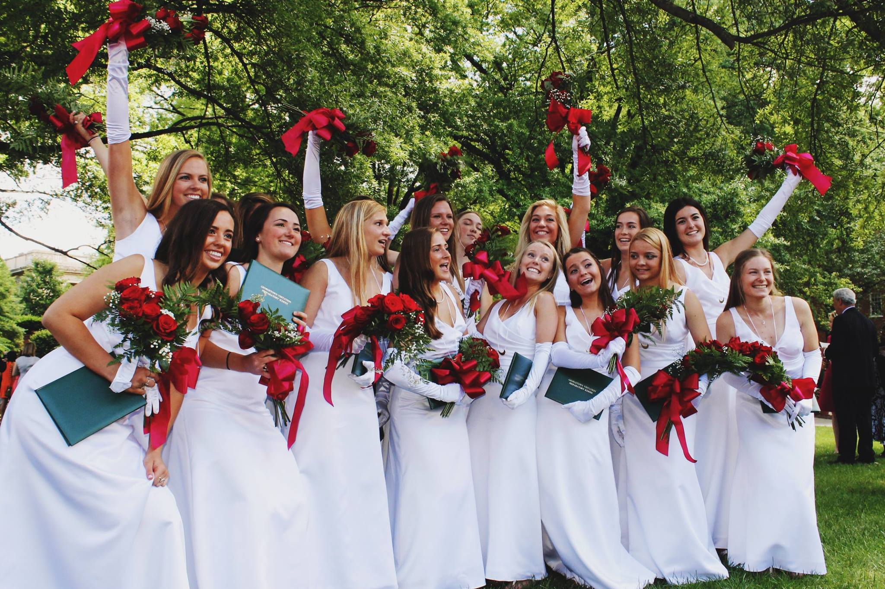

I grew up in Oakton, Virginia. I have lived in northern Virginia my whole life. Northern Virginia is known for its absolutely horrible traffic, being right outside of DC and is where the FBI is headquartered. I have loved growing up in Northern Virginia and would not want it any other way, I got the taste of city and country along with being near lakes and Rivers and an hour drive from the beach.
As a kid I played a lot of sports, and spent most of my time being outside. Some of the sports I played growing up included basketball, soccer, swimming, lacrosse, and volleyball. If it was possible to continue to play that many sports I would. I was also in girl scouts growing up although I did not enjoy it as much as I thought I would. Most weekends, after all my sports were finished or if I had a free day I would go to my Grandfather's farm which was about 45 minutes away. At my Grandfather's we would go camping, horse-back riding, hunting, and swim in his pool. I loved my Grandfather's farm and spent most of my childhood there.
I went to a private, all-girls Catholic school in Washington, DC for high school. Although I had my doubts about an all-girls school it turned out to be the best decision I ever made. My high school, Georgetown Visitation Prep School, is so special to me. I had a very unique high school experience, academics were very hard to prepare us for college, but we knew how to have fun. Everyday was like a spirit day and there were always baked goods around. I loved Visitation and I believe it helped shaped me into the woman I am today.
